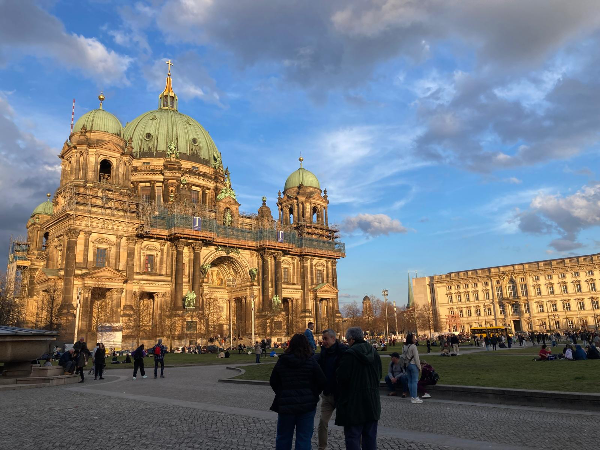

About me
Hi, I'm Fabienne!
Having completed my Bachelor's in Business Administration, I'm now pursuing a Master's degree in Business Intelligence and Process Management. I'm from Berlin and I love literature, art and learning new languages!
Interests
- Literature & Art
- Creativity & Languages
- Swimming & Climbing
- Board Games
Stations

| Period | Station | Description |
|---|---|---|
| Current | Master's Programme HWR Berlin |
Business Intelligence and Process Management |
| 2022 – 2025 | Bachelor's Programme HWR Berlin |
Business Administration Bachelor's thesis on AI acceptance |
| 2021 – 2023 | Junior Consultant Student consultancy, Potsdam |
Consulting projects as part of a student-run consultancy |
| 2020 – 2022 | Studies in Linguistics Potsdam |
Linguistics – my starting point before switching to business |
Alongside my studies, I gained work experience in the Marketing sector and completed an internship in Knowledge Management.